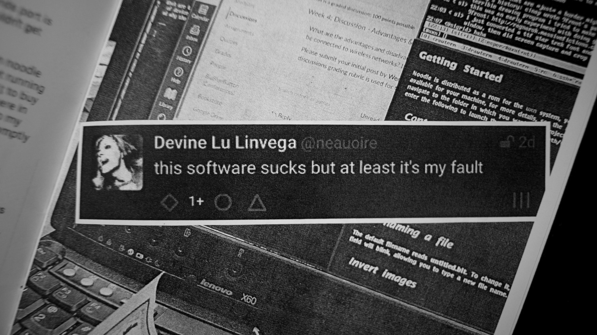
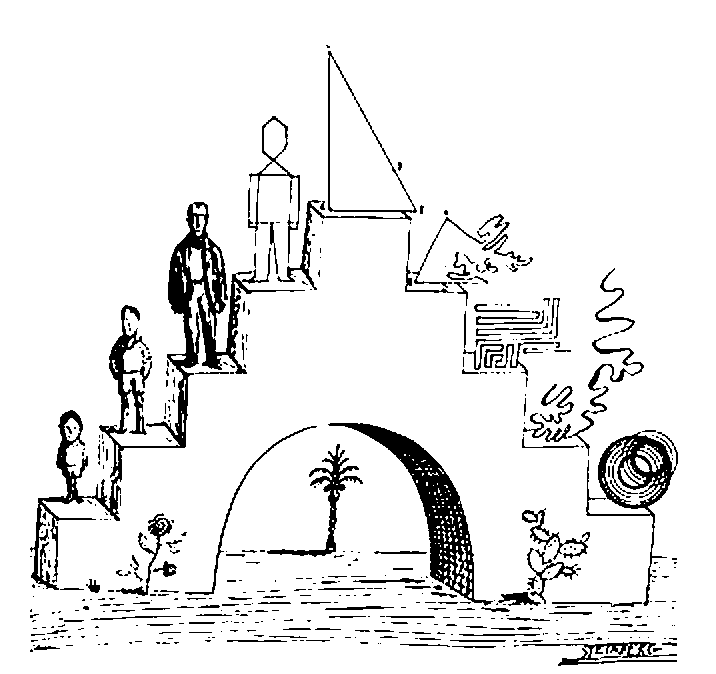
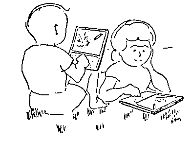
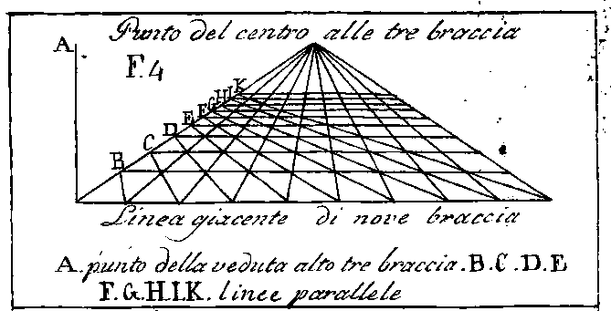
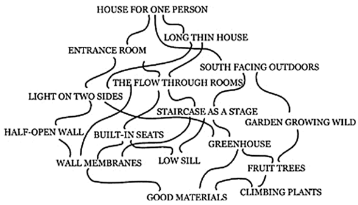
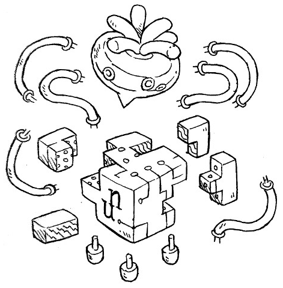
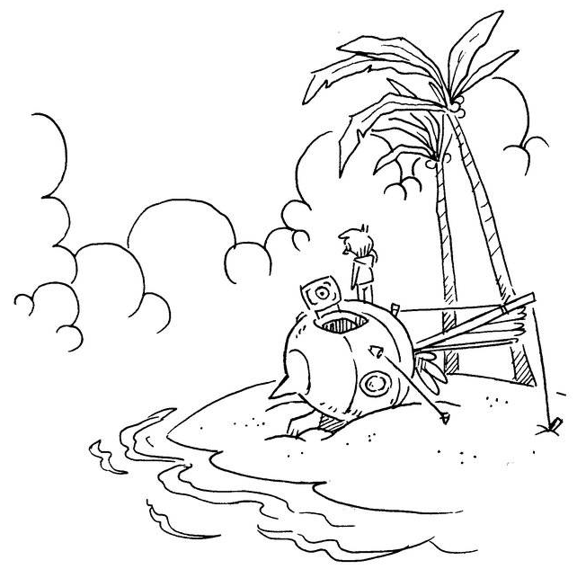
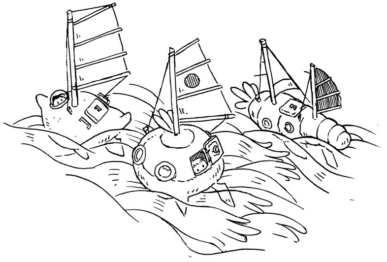

So, why not C? While my computers sometimes share an architecture or an operating system, cross-platform audio and graphical development is unlikely to work between them, and is subject to bitrot.

The devlog is a collection of design notes.
Below are thoughts on the creation of a clean-slate computing stack based on the universal virtual machine strategy for digital preservation of software projects and documentation for Hundred Rabbits. The content of the devlog was presented in front of an audience during Weathering Software Winter.
- Part 1: A virtual machine
- Part 2: A personal computer
- Part 3: A programming language
- Part 4: Closing Thoughts
Safe upon the solid rock the ugly houses stand:Edna St. Vincent Millay
Come and see my shining palace built upon the sand!
Acknowledgments
The realization of this project is largely due to the work of the community, with special thanks to Andy Alderwick, Sigrid Solveig Haflínudóttir, Andrew Richards, and everyone else who contributed ideas and shared their knowledge with me, without which Uxn could not have become what it is now. Nearly a year after its initial draft, a lot of uxn code has been written. In fact, both the text-editor used to write the devlog and the wiki that generated this page, are hosted on this strange personal computer.
A virtual machine without registers
Emulation is the reproduction of the behavior of a physical computer's circuitry with software. Given that an emulator can translate the actions of one computer onto an other, the same program can sometimes be used on both.
Virtual Machines are software emulating the actions of real and imaginary computers. Someone could devise a fictional computer that is not necessarily based on existing hardware, write software for this fantastical computer, implement an emulator for it, and use the same program across vastly different systems via an emulator.
Over the years, I wrote software for a multitude of peripherals and frameworks, the vast majority is now defunct due to either falling behind on the ever-changing toolchains or simply the hardware being discontinued. Perhaps it's just a matter of time until people build emulators to make these projects usable again, otherwise these projects were never truly mine, and my learning of these languages only ever belonged to the platforms.
I. An Adequate Number Of Bits
During my research into portability, I kept thinking about how frictionless it is to play classic console games today. Pulling on that thread led me to projects designed explicitly for virtual machines, such as Another World which is equally easy to play today due to its targeting of a portable virtual machine, instead of any ever-changing physical hardware.
For a time, I thought I ought to be building software for the NES to ensure its survival against the wave of disposable modern platforms — So, I did. Unfortunately, most of the software that I care to write and use require slightly more than an 8-button controller, namely a keyboard and a pointing device.
So, why not the Commodore 64? Having implemented a NES emulator I found that, in comparison, implementing a c64 emulator is a monumental project.

II. Tarpits & Houses Of Cards
If the focus of this experiment is to ensure the support of a piece of code by writing emulation software for each new platform, the specifications should be painless to implement.
Let's use the time one would need to write a passable emulator as a limit in complexity for this system. Could a computer science student implement an emulation of the 6502 instructions in an afternoon, a week, a month? Could that design be simplified, changed in some way to make it more approachable for would-be implementers?
- Smalltalk is a complete computing environment and virtual machine, that was said to take about a year for one person to implement.
- Lisp(tal) is a fully featured symbolic functional architecture that takes about a month to implement. It comes with the complexities of garbage collection, extensive memory usage, and endless edge cases.
- Brainfuck(tal) is a 8-Instructions architecture taking at most an afternoon for one person to implement. What it does away in emulation complexity, it offloads onto the toolchain needed to make programs fast and writing them a pleasant experience.
- Subleq(tal) is a 1-Instruction architecture taking at most an hour for one person to implement. Similar tarpit to brainfuck, only moreso.
So, let's set a limit to the complexity of the system to a week, since it would be an equally Herculean task to build an emulator and assembler for a machine with thousands of instructions; or a single instruction machine building abstract logic from thousands of primitive parts.
So, why not the Chifir? Because of its 16-bytes long instructions, incomplete specification and unspecified behaviors.
III. Things Betwixt
In 1977, a programmer created the CHIP-8 virtual machine with 36 instructions, 16 registers and 4096 bytes of memory. It had no mouse device, its controller is 16 keys organized in a square, the screen is barely capable of displaying readable text, but I was able to write an implementation in a weekend.
In 1964, a computer scientist proposed the SECD abstract machine with 10 instructions and 4 stacks. The superficially documented implementation specifies a list processing system capable or hosting functional languages. The system was later expanded with arithmetic and IO operations, but rests on an intricate and inefficient garbage collected system. I was able to write an implementation in about two weeks.
So, why not Nock? While it is supposedly a clean slate computing stack(turned webapp delivery system somehow), its fascists, blockchain and technocratic ties points in the opposite direction of where I want to go, to say nothing of the challenge of making the system runs reliably and fast.

Somewhere along this voyage into finding a suitable host for my programs, I began thinking about electronic waste, and I couldn't justify surrounding myself with yet more electronics. This dream platform would therefore be designed to be emulated, its complexity would be designed around the complexity of software and not that of hardware, so I do no consider FPGAs.
So, why not Pico-8? The comparison comes from people conflating Uxn with Varvara. A better comparison would be Uxn and the LuaVM, which lives at the core of Pico-8, but isn't intended to be targeted directly and is subject to change.
IV. Back & Forth
The balancing act of virtual machine instructions, assembler, emulator and the resulting capabilities of its language eventually brought me back to stack machines.

Concatenative languages consist of breaking a program into a list of words, and to interpret each word, words are often combinations of other words, combined to create more complex words. Brackets and parentheses are unnecessary, there is no requirement for precedence rules, the program merely performs calculations in the order that is required, letting the stack store intermediate results on the fly for later use.
| operation | 3 | 10 | 5 | + | * |
|---|---|---|---|---|---|
| stack | 3 | 10 | 5 | 15 | 45 |
| 3 | 10 | 3 | |||
| 3 |
For this specific imaginary system,
I wanted the memory, program and stacks to consist of 8-bit cells. For
example, the 12 / (34 - 12) sequence is equivalent to the following six
bytes:
uxntal | # 12 34 OVR SUB DIV binary | a0 12 34 07 19 1b
In order words to keep the assembly programming pleasant and fend off the need to abstract computation to a high-level language, I've combined a few stack-machine operations, arithmetic, bitwise functions and reached an expressive virtual machine that can be implemented in a weekend running at a reasonable speed. An emulator capable of running the self-hosted assembler is about 150 lines of C.
For it to work as an Archival Computer, it must remain completely detached from dependencies, and highly discoverable. It operates on bytes as to remain portable on small systems, abstracting I/O entirely to the host system via dedicated opcodes and, hopefully, its design will encourage re-implementation instead of adoption.
- See the napkin definition
A programming language without names
A binding error happens when a name outlives its value or when a reference is shared between two things that should not have shared it, like when a variable initialized in one context is read in another.
char *buf = malloc(64); free(buf); buf[0] = 'x';

The majority of what we call progress and think of as the signs of a good programming language(garbage collection, borrow checkers, static analysis, null safety..) seems like the side-effects of managing the fallout from the decision to name things.
So let's not even go there.
MOV R0, 12 MOV R1, 34 SUB R2, R1, R0 ( uh oh ) DIV R3, R0, R2
#12 #34 OVR SUB DIV
The correctness of the final result depends on nothing having touched R0 in between SUB and DIV. In the stack version, OVR copies the value to the top so it can be used twice, there is no name holding the reference open.
In stack machine assembly there are no variables, no registers, no scope and no environment, unlike other languages where linearity is enforced by tooling and runtime checks, aliasing is altogether not expressible in the model. The consequence is that the entire family of bugs caused by names cannot be written.
I. Programming without names
Lacking named variables, the natural description of a word's behavior is its effect on the stack. Type inference in Uxntal is done by checking the stack effect declarations of words, against the sum of stack changes predicted to occur based on the arity of each token in their bodies:
@add ( a* b* -: c* ) Warning: Imbalance in @add of +2 DUP2 ADD2 JMP2r
The system extends naturally to branching. Each branch of a conditional must produce the same stack effect as the other, words that fail to balance generate a warning, which catches a meaningful proportion of invalid programs:
@routine ( a b -: c ) Warning: Imbalance in @routine of +1 EQUk ?&sub-routine POP2 #0a JMP2r &sub-routine ( a b -: c* ) POP2 #000b JMP2r
This is a very basic and permissive type system by the standards of academic type theory, but it is the type system that fits a machine whose defining property is the absence of names. It takes minutes to understand, seconds to check, and costs nothing at runtime.
II. Algebraic Reduction
Because operations have no hidden dependencies through variable names, sequences of stack operations can be reasoned about purely algebraically. Any permutation that produces the same stack transformation as another is a valid rewrite. This makes a class of optimizations mechanical. Redundant permutations collapse to simpler ones, for example:
#12 #34 SWP POP -> NIP
Tail-call optimization happen where jumps to subroutines are followed by subroutine returns and can be replaced instead by a single jump:
@routine ( a b -: c ) SWP ;function JSR2 JMP2r -> JMP2
Going one step further, routines that would otherwise terminate in a tail-call could even be relocated before their tail's location in memory and do away with the ending jump altogether. We leave here a comment marker to indicate to the stack-effect checker that the routine's tail will fall-through.
@routine ( a b -: c ) SWP ;function JMP2 -> ( >> ) @function ( b a -: c ) DIV JMP2r
What makes these rewrites reliable is precisely the absence of names. In a language with variables, any of these transformations might be invalid because a name could introduce a dependency invisible to the optimizer. When there are no names there are no invisible dependencies. The sequence of operations is all there is, and what can be said about it algebraically is everything that can be said about it.

- See the BNF definition
A personal computer
What are computers for, anyway? I think of a computer as a lens through which I can observe and listen to the natural world. Some mathematicians are of the opinion that the doing of mathematics is closer to discovery than invention. Mathematical beauty is the aesthetic pleasure derived from the abstractness, or orderliness of mathematics. Similarly to how one might enjoy spending time studying venation patterns, we can imagine a device to explore procedural music and parametric illustration.
That romantic vision of the potentially emancipating, power of computing was, since its inception, smothered by military drones, surveillance hardware and the advertisement machinery. To most of my friends, computing evokes either encroaching social networks or the drudgery of data entry.
So I wandered back through history and down the stack, looking for something I could build that no one could take from me. As it turns out, large address spaces and high definition graphics don't play much of a role in getting there.

I. Personal
Let's consider the whole enterprise of designing and documenting this fictional computer to be a sort of model that others could adapt to their own designs, a call to encourage individuals to conjure up their own vision of a computing machine, tailored to suit their own needs; And Varvara, a demonstration of the potential of personal computing systems, and not as a platform that should be adopted and adapted to fit broader computing needs.
The purpose of this document is not to gather would be users, but instead review potential portable computing skills that are not platform-specific, and to serve as a reminder that the key to permaculture's resilience is achieved through a diversification of methods.

I'm certain that making something unique by way of customization is necessary for care. I often think back on how, in the movie Hackers(1995), each character had their own laptop launch sequence reflecting their aesthetics. — A far cry from today's disposable laptops, each equally adorned of proprietary services stickers.
For mending to even be envisaged, one must be able to generally understand that which needs to be mended; a venture which, thanks to the ever complexifying stack upon which modern computing is built, will have you promptly laughed out of the room. But just for the sake of this article, the required understanding of a system shall end at its bytecode bedrock.

A side-effect of working from within unique computing environments is that looking for generic solutions is often more impractical than solving the problem head on. By that, I mean by that the solution needs to be adapted to the specifics of the virtual system, and this in turn develops understanding and care.
II. Computer
The computer in this case is the sum of potential I/O communications with the underlying virtual machine. In this case, the VM can communicate with up to 16 devices at once, but has no knowledge of what a screen or a keyboard might be, these devices are what make up the computer.
Uxn is to Varvara, what the 6502 is to the Classic Nintendo.
When it came time to find out how I might want to interact with this computer, I started with a terminal, it seemed as good a place as any to start off from, by terminal I mean a console to send and receive bytes of data. The terminal communication allows me to leverage the power of the host OS to further develop the system.

As the system begins to take shape, I consider that possibly someday I may lose my sight, or the use of my hands, or I may become deaf. I wonder how I might replace one device for another in the future, and how I might adapt each device to my changing needs. I leave some blank spaces to be filled at a later time, should I need them.
Now lie in it.
Autumn is just around the corner, and when the leaves begin to fall, it will have been four years since the early sketches of a personal computing system which became Uxn. I thought it would be interesting to look back and see what has happened since.
What problem was it supposed to address?
Uxn was designed explicitly to be a minimal bytecode target capable of preserving a handful of our projects, and to be flexible enough to accommodate the ones we had yet to make, in a way that would be portable and robust against bitrot.
In regard to preservation, time will tell if it was a success, but I can say that it has taken 3 years for the ISA to be frozen, and the tail end of that period only saw subtle changes that did not impact the projects made in the first two. The remaining work during that time was primarily finding, documenting and testing against the remaining undefined behaviors.
During these four years, I have seen countless developers successfully implement the runtime from scratch without my help; this is giving me hope that for as long as the documentation survives, developers can create new emulators as the hardware platforms and operating systems continue to evolve.
It is probably power hungry
Uxn, in part, was meant to help us reconcile the power-hungry tools we used with the energy we could harvest from the solar generated aboard our small boat. It is commonly understood that virtual machines are inefficient, I went ahead knowing that it might be self-defeating to target a virtual machine in which transformations are so granular that it would be hard for the host machine to optimize for.
In that way, Uxn is tolerably impractical, but it is also only one part of a larger gesture towards reducing the strain on that resource, which requires more than just putting a virtual machine at the center of it all; what was possible to do on paper, outside the browser, or natively, was thereafter done that way, but a few of our projects were still inextricably linked to portable graphical applications.
Uxn might have helped a bit, but only so much; for instance, the text-editor with which I am typing this article and use to do near every computery-thing, uses dramatically less energy than what I used previously. But I wouldn't attribute any noticeable power gain to the application running as a rom or natively. As a target, it shines most brightly in helping me to reduce the cost of iterating during software development itself, say we compare the minuscule drain of assembling a rom in comparison to rebuilding a native graphical application or reloading a webapp.
It doesn't solve a real problem
I am not convinced that computers solve any real problems either. Asking a room full of software creators "what are computers for anyways?" will get you little beyond vague suggestions of bureaucratic utility, which leads me to question whether bureaucracy is solving any real problems, and so on, ad absurdum.
But if we are to put any value in preserving digital art, music, video games and other distractions from the very real problems that basic needs demand, it might be worthwhile to address the problem head-on, and to encourage piracy at a massive scale, by duplicating digital content locally, to give data a chance to survive moving forward. Cloud platforms have all to win by making us forget that we can utilize a specific length of bytes without their saying so, and emulation is just one of many ways of exploring this issue.
The problems it is trying to solve are self-inflicted
There is a time immemorial tradition of discriminating against the various flavors of nomadic vagabonds living in tents, cars, canal boats — we are not exempt from that. On discussion forums, the economics of living on the water without a permanent address seem to elude most people, leaving them to believe that this way of life is something only the wealthy can do, that being in it is necessarily a deliberate choice untied from economic realities and that we somehow reside outside the boundary of whom deserve to be heard.
I don't think that our changing reality was what catalyzed my search for alternatives, but it might have precipitated it. At that time, browsers hadn't started force-feeding AI assistants, but it was already many years into Apple devising new ways to sabotage the repair of devices; it was becoming obvious that my choice to target the modern web browser for my little graphical toys was a vote against decentralized general purpose computing, and one for its homogenization by companies that were increasingly antagonistic to our situation.
Four years ago, had our situation been different, I don't know that I would have decided to stay with either iOS or web development. But even now, being more familiar with the landscape, I am not sure that making use of pre-existing systems would have been viable solutions for where we were trying to go.

It is too complicated, or not complicated enough
I noticed that Uxn attracts both esoteric and practical individuals. The esoteric crowd looking at the Uxn specifications are rapid to point at various alternatives for which very little software exists, and the practical ones, at the limitations and ways in which it is deficient, "the memory is too small," "the opcodes too few," "stack machines are too slow", and so on.
c 00:00.998458 haskell 00:02.870586 gforth 00:13.428614 > uxntal 00:15.861439 lua 00:16.727872 ruby 00:21.418707 python 00:32.362443 tak()
Fortunately, I have seen people come around after looking back at the typical projects that they enjoy doing, and how they can do them comfortably with less means, but there is no denying that Uxn has a specific scope in mind which does not accommodate all projects. That was never really its intended purpose, it has many times over been successful in, not acquiring users, but getting developers to explore their own visions and finding joy there.
Was it all worth it?
Is it worth it to spend hundreds of hours to save what must amount to much, much, less? It depends, if you think too much about where you're going, you might lose respect for where you are. I have friends who were complaining about a tool in 2020, they still are today; their throughput would not be much improved had they spent a years detouring to rebuild a whole tech stack. For others, who see their ideals and tools diverge, it might be encouraging to see prior explorations in that space; to those, I can only say that it is very unlikely that you will see building an environment that respects your values and idiosyncrasies as a waste of time, it might even bring you closer to others sharing in your struggles and who might become your friends.
Four years ago, I had doubts that it would work out, but time flies when you're having fun!
- Frozen Specification: Uxn is implicitly frozen at 0 Kelvin, it can be implemented in a hundred lines in most languages.
- Zero Dependencies: The toolchain is entirely bootstrappable, no dependency on host OS semantics beyond I/O abstraction.
- Minimal Conventions: Varvara is the current baseline specification, but is not frozen.
- Archival Format Contract: Uxntal has a standard for ROM metadata, but is not frozen.
- Operational Correctness: Opctest is an extensive test suite that validates every single opcode, passing the test yields a compatible implementation. Correctness is defined operationally, Uxn has no undefined behaviors and cannot error.
- Independent Redundancy: Uxn, by way of Varvara, has open source emulation for dozens of architectures already.
- Artifact friendliness: Deterministic execution model is inspectable step-by-step, accessible symbol files.
- Cultural Preservation Efforts: The ecosystem features its own sign-language and glyph system, but currently lacks multilingual documentation.

Special thanks to Rek, Alderwick, Sigrid, Cancel, badd10de, Bellinitte, Eiríkr, Tbsp, Wim, zzo38, Kragen, Kira, Snufkin, Virgil, SL, Sejo, gustav, soxfox, and many more.
The wide world is all about you; you can fence yourselves in, but you cannot fence it out.J. R. R. Tolkien
incoming: uxn uxntal now lie in it